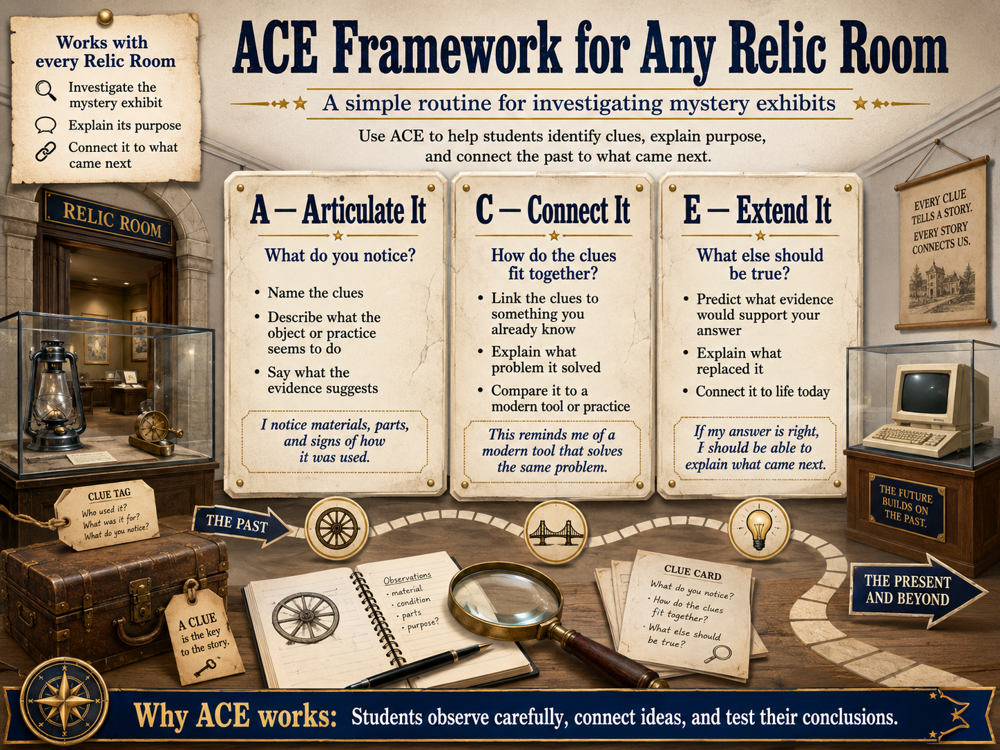
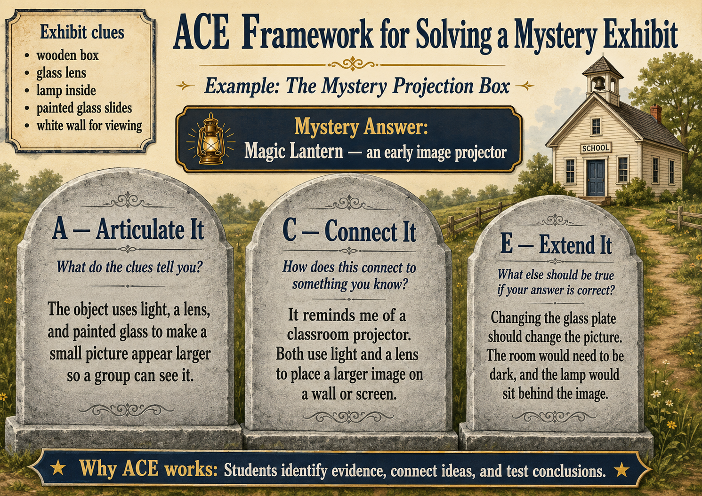

What is ACE?

The three moves
A — Articulate It
C — Connect It
E — Extend It
How ACE applies to a Relic Room

| ACE step | Student question |
|---|---|
| Articulate | What do the clues say in your own words? |
| Connect | How do the clues fit together? |
| Extend | What prediction could prove or disprove your answer? |